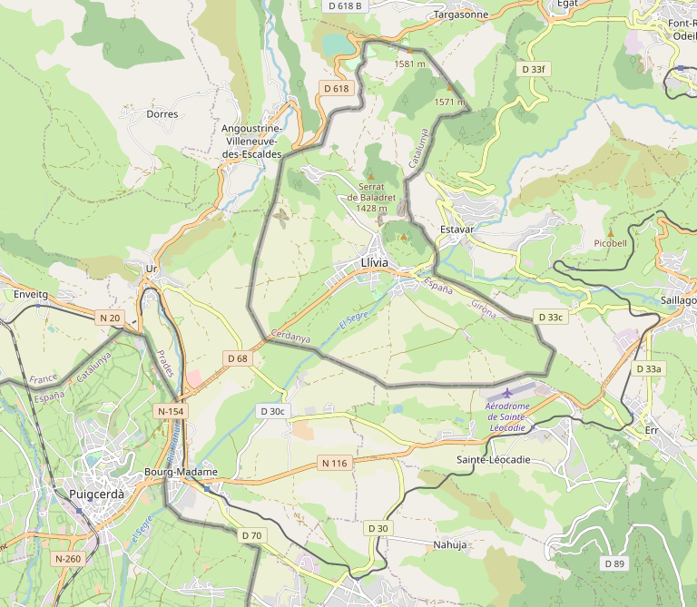
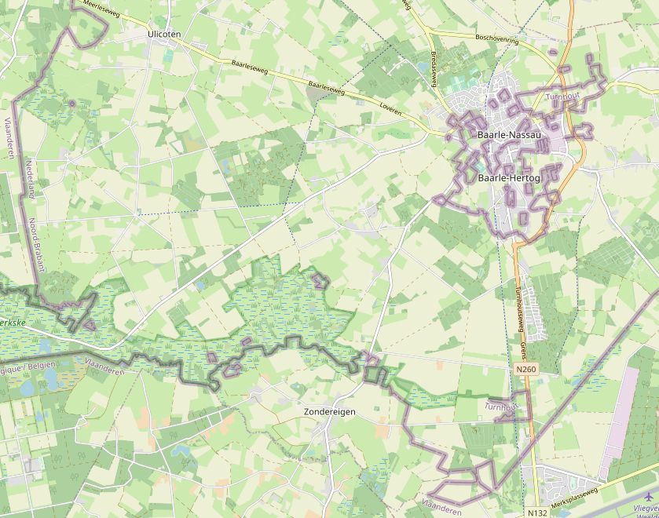
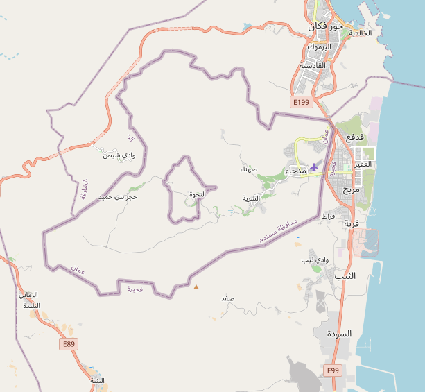
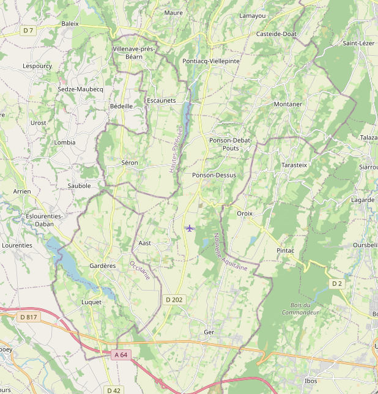

MXTHL3
[Retour]
Enclave espagnole de Llívia en France

Cause: Convoité par la France et l'Espagne, le territoire sera finalement récupéré par cette dernière (traité des Pyrénées, 1659).
Enclaves de Baerle-Duc (Belgique) et Baerle-Nassau (Pays-Bas)

Cause: Partages de territoires entre deux seigneurs au XIIe siècle.
Double enclave (ÉAU dans Oman dans ÉAU)

Cause: allégeances différentes des populations locales.
Enclaves Bigorre (Hautes-Pyrénées) dans Béarn (Pyrénées-Atlantiques)

Cause: anciennes provinces.